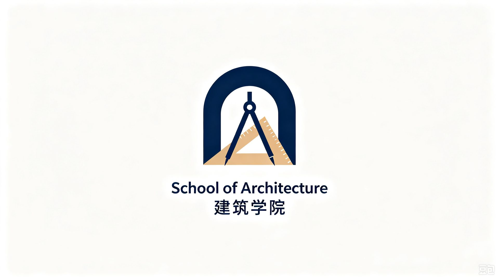
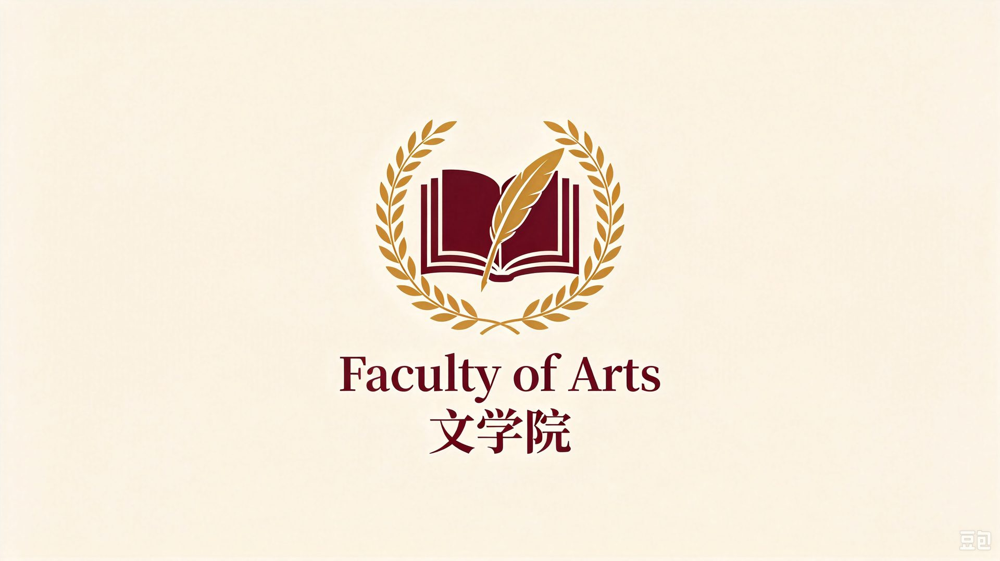
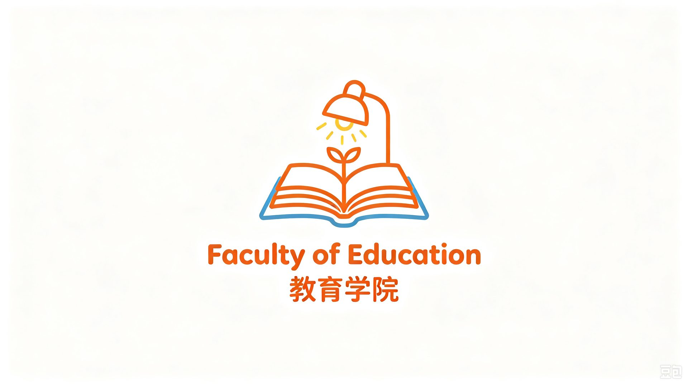
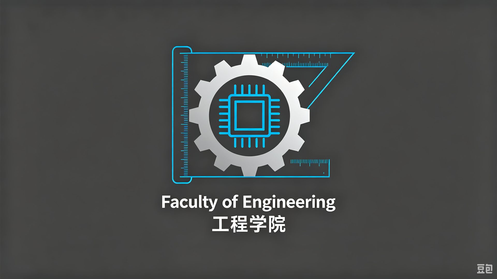
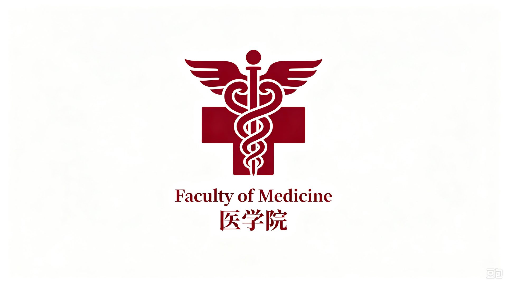
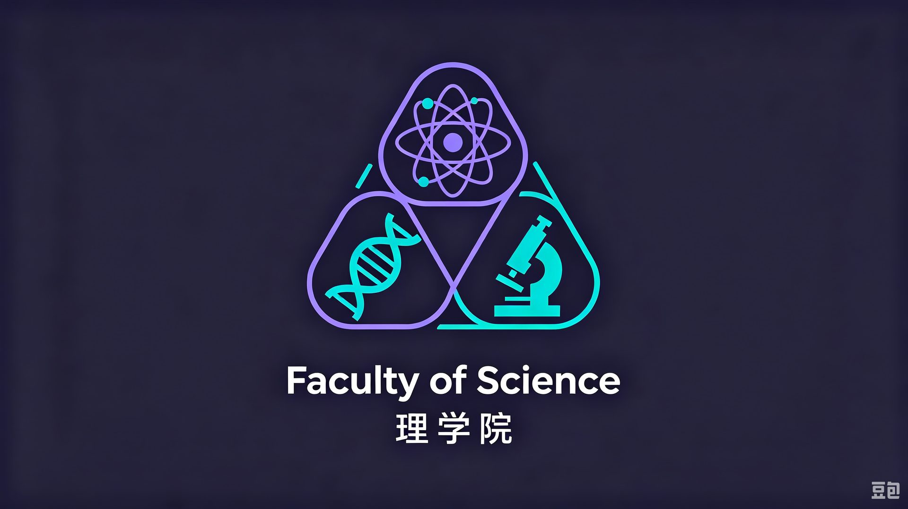
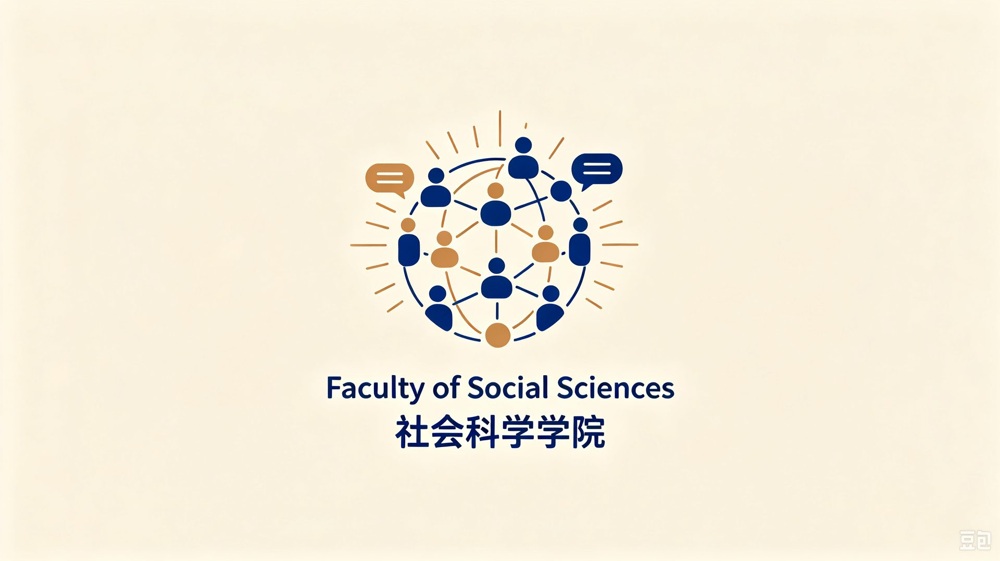
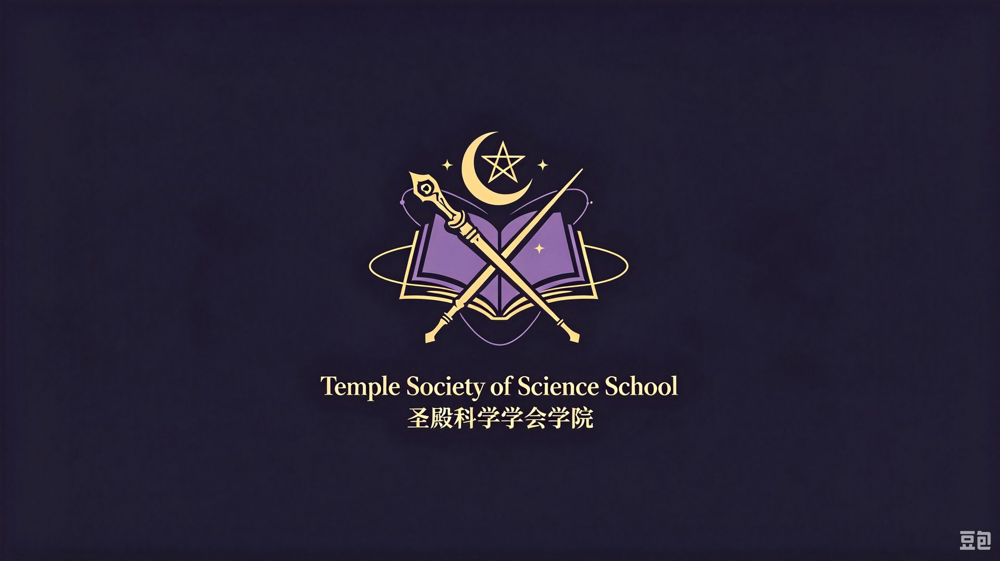

国际声誉与排名
江川大学连续多年稳居全球百强，研究影响力与国际化水平获国际公认。
0
QS 世界大学排名 2027
全球第 76 位 · 内地高校前列
0
QS 亚洲大学排名 2026
亚洲第 9 位
0
泰晤士高等教育世界排名 2026
全球第 103 位
0
全球高被引科学家
年度入选学者人数
于十所学院之中，探寻浩瀚学问

建筑学院School of Architecture

文学院Faculty of Arts
商学院School of Business

教育学院Faculty of Education

工程学院Faculty of Engineering
法学院Faculty of Law

医学院Faculty of Medicine

理学院Faculty of Science

社会科学学院Faculty of Social Sciences

圣殿科学学会学院Temple Society of Science School
0
在校学生（含研究生）
0
教研人员
0
学院与专业学院
0
国家和地区生源
FAQ常见问题
请浏览“招生就业”栏目，查阅本科与研究生招生章程，并按流程完成网上报名与材料提交。
学校设立校长奖学金、学业奖学金与社会捐赠助学金，覆盖本科至博士各层次，确保不因经济原因失学。
国际学生可通过全英文授课项目申请，详见“国际事务”栏目，提供专属奖学金与语言支持。
主校区坐落于【后续补充具体地址】